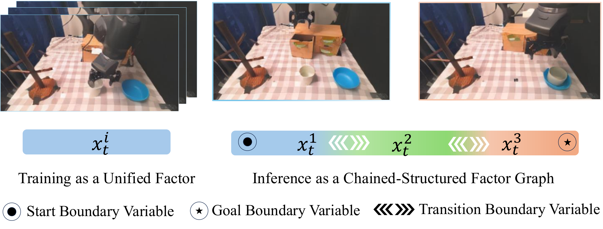
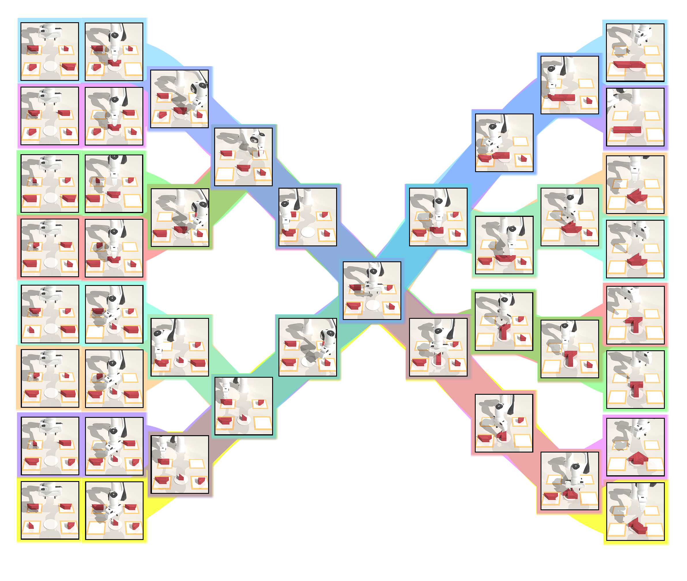
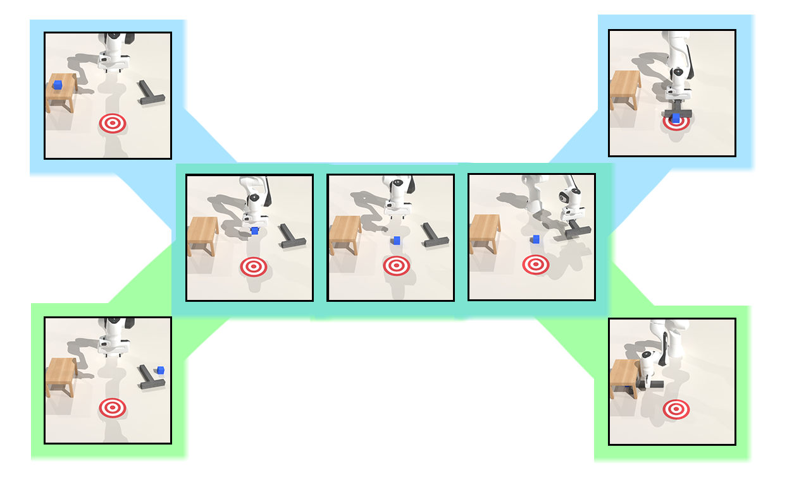

Compositional Visual Planning via Inference-Time Diffusion Scaling
ICLR 2026 International Conference on Learning Representations
Abstract.
Diffusion models excel at short-horizon robot planning, yet scaling them to long-horizon tasks remains challenging due to computational constraints and limited training data. Existing compositional approaches stitch together short segments by separately denoising each component and averaging overlapping regions, which becomes unstable as the factorization assumption breaks down in noisy data space. We propose that the key to stable compositional generation lies in enforcing boundary agreement on the estimated clean data (Tweedie estimates) rather than on noisy intermediate states. We formulate long-horizon planning as inference over a chain-structured factor graph of overlapping video chunks, where pretrained short-horizon video diffusion models provide local priors, and enforce boundary agreement at inference time through synchronous and asynchronous message passing on Tweedie estimates. Our training-free framework significantly improves over existing baselines across 100 simulation tasks spanning 4 scenes, and generalizes to unseen start-goal combinations that are not present in the training data.
Toy Example.
We illustrate the failure mode of composing in noisy space with a 2D drawing task. A short-horizon diffusion model is trained on circular arc clips. At test time, factor 1, factor 2 and factor 3, three overlapping 120° arcs, are composed into a three-petal flower.
DiffCollage drifts and leaves gaps at the factor boundaries. Our method enforces boundary agreement on the Tweedie estimates, so the noisy samples align across boundaries and the loops close.
Code and pretrained checkpoint for this example: comp_visual_planning_toy_example.
Method.
We compose long-horizon plans from overlapping, short-horizon factors produced by a single pretrained video diffusion model. The central challenge is the consistency of this composition: during forward diffusion, noisy variables become entangled across time, breaking the factorization assumption behind score averaging. Our key insight is to compose where the model's estimates are most reliable, on the Tweedie estimates.

1. Factor graph.
We represent the plan as a linear chain \(z = [u^1, \dots, u^m]\) and place \(n\) overlapping factors \(x^i = [u^{2i-1}, u^{2i}, u^{2i+1}]\), \(i = 1, \dots, n\), all generated by the same short-horizon model \(x_\theta\). The endpoints \(u^1 = s\) and \(u^m = g\) are the start and goal boundary variables, and \(A_i\) and \(B_i\) are linear selectors that extract the first and last frames of factor \(x^i\). The feasibility of a plan is enforced by the following boundary agreements:
This reduces global planning to local generation with explicit boundary equalities. Forward diffusion, however, breaks the factorization among the noisy factors \(x_t^{1:n}\), so we impose the dependencies on the Tweedie estimates \(x_{0|t}^{1:n} = x_\theta(x_t^{1:n})\) instead:
where \(\exp(-L(x_{0|t}^{1:n}))\) acts as a potential that penalizes inconsistencies among the estimated clean variables. We plan entirely in the latent space of the Cosmos tokenizer and map the final plan to robot actions with an inverse dynamics model.
2. Message passing.
The loss \(L = L_{\mathrm{sync}} + L_{\mathrm{async}}\) combines two message passing schemes on the Tweedie estimates, and guides each DDIM step through diffusion-sphere guidance.
Synchronous
With Gaussian boundary potentials, the joint constraint over all factors is Gaussian, \(p_{\mathrm{sync}}(x^{1:n} \mid s, g) \propto \exp\!\big(-\tfrac{1}{2} (x^{1:n})^{T} \Sigma^{-1} x^{1:n} + \eta^{T} x^{1:n}\big)\). We penalize the deviation of the Tweedie estimates from the consistent linear system:
All updates are computed from the same iterate and applied simultaneously, which preserves parallelism and eliminates order-dependent effects, but can be numerically stiff.
Asynchronous
One-sided, stop-gradient targets propagate constraints forward from the start and backward from the goal in a TD-style manner:
where \(\mathrm{sg}(\cdot)\) is the stop-gradient operator, \(\hat{x}_{0|t}\) is a target produced by the diffusion model with the latest parameters, \(x_{0|t}\) is produced by an EMA of the model parameters, and the discount \(\gamma\) down-weights messages as they move away from the start or the goal. This yields faster and more stable convergence at the cost of mild bias.
Diffusion-sphere guidance
To balance alignment and diversity, we interpolate between the unconditional sampling direction and the normalized descent direction induced by the loss:
where \(d^{\mathrm{sample}} = \sigma_t \epsilon_t\) is the unconditional annealing step, \(d^{*} = -\sqrt{s}\,\sigma_t \cdot \nabla_{x_t^{1:n}} L \,/\, \lVert \nabla_{x_t^{1:n}} L \rVert\) is the steepest descent direction for the joint objective, and \(d_m\) is normalized to satisfy the spherical-Gaussian constraint.
Combining the synchronous and asynchronous losses outperforms either alone, and success rates improve as the number of sampling steps increases.
Benchmark.
We develop a simulation benchmark for compositional planning in robotic manipulation, built on ManiSkill. Each scene contains N start states and N goal states, resulting in N2 tasks, and the training data only contains demonstrations for N start-goal pairs. At test time, we evaluate on both the N seen pairs (in-distribution, IND) and the remaining N2 − N unseen pairs (out-of-distribution, OOD), since a capable planner should generalize to new combinations if the dataset covers all the required fragments. The four scenes give 100 tasks, 18 IND and 82 OOD, all planned from raw pixels without privileged state.




Evaluations.
Given a start image and a goal image, each planner synthesizes a video plan, and an inverse dynamics model executes it. We show one randomly chosen in-distribution and one out-of-distribution example per scene, for our method and DiffCollage. More episodes for every task are in the gallery.
Takeaways.
-
1
Compose on Tweedie estimates, not on noisy states.
Forward diffusion entangles noisy variables across time and breaks the factorization assumption behind score averaging. Enforcing boundary agreement on the estimated clean data yields globally consistent long-horizon plans.
-
2
No additional training.
The method is plug-and-play with a frozen short-horizon video diffusion model and scales with test-time compute: success rates improve as the number of sampling steps increases.
-
3
Generalization to unseen start-goal combinations.
Across 100 simulation tasks in 4 scenes, our method maintains stable performance on out-of-distribution tasks, where DiffCollage fails at almost all tasks and policy learning baselines degrade significantly. On a real Franka robot, it succeeds in 18 of 20 out-of-distribution trials, against 0 of 20 for DiffCollage.
BibTeX.
@misc{zhang2026compositionalvisualplanninginferencetime,
title={Compositional Visual Planning via Inference-Time Diffusion Scaling},
author={Yixin Zhang and Yunhao Luo and Utkarsh Aashu Mishra and Woo Chul Shin and Yongxin Chen and Danfei Xu},
year={2026},
eprint={2603.02646},
archivePrefix={arXiv},
primaryClass={cs.RO},
url={https://arxiv.org/abs/2603.02646}
}